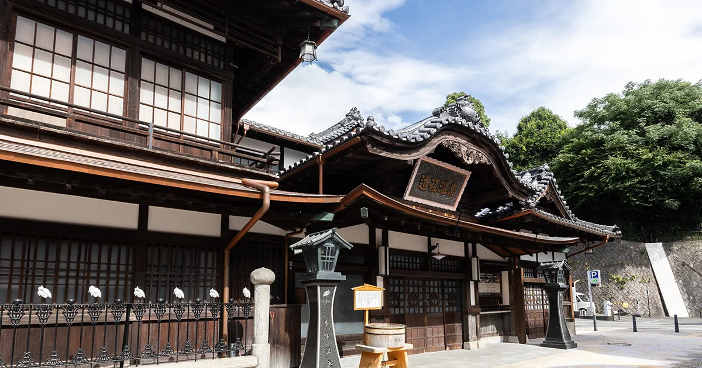

첫날 도고칸 1박둘째·셋째 날 칸데오 2박이동 전차 + 도보 · 필요할 때 택시
OUR FOUR DAYS
하루씩, 편하게 둘러봐요
날짜를 누르면 그날의 일정이 보여요.
일정 아래 ‘엄마의 의견!’을 눌러 메모를 남겨 보세요.
시간은 이동과 식사를 위한 예상 시각이에요. 항공편·예약·날씨에 따라 조정해요.
TASTE OF EHIME
같이 먹으면 더 맛있는 한 끼
도미솥밥부터 따뜻한 우동까지, 여섯 곳을 골랐어요.
도미밥은 두 가지예요.
마쓰야마식은 익힌 도미를 넣은 솥밥, 우와지마식은 도미회·날달걀 양념을 곁들이는 밥이에요. 날것이 부담스러우면 익힌 메뉴를 골라요.
A PLACE TO REST
우리의 편안한 쉼표
정해진 숙소는 두 곳. 둘째 날 아침에 이동해요.
12월 4일 금 → 6일 일 · 2박
칸데오 호텔 마쓰야마 오카이도
CANDEO HOTELS 松山大街道
오카이도 정류장 앞. 시내 관광 후 쉬어가기 좋아요.
기본 체크인 15:00 · 체크아웃 11:00
숙소 지도 보기A LITTLE DETOUR
마음이 끌리면, 다른 풍경도
아래 코스는 선택 사항이에요. 기본 일정에 더하기보다 서로 바꿔요.
시모나다역·후타미 해안셋째 날 바다 코스 대신
바다를 바라보는 역 벤치가 유명해요. JR 마쓰야마역 → 이요카미나다역 → 후타미 해안·점심 → 시모나다역 → 시내 순서로 다녀와요.
JR 마쓰야마역에서 시모나다역까지 열차로 약 50분. 왕복 열차 시각을 먼저 정해야 해요. 이 코스를 고르면 미쓰하마·바이신지 일정은 빼요.
시모나다역 지도이시테지 사찰첫날 도고공원 대신
오래된 문과 삼층탑을 볼 수 있는 시코쿠 순례 사찰이에요. 사찰 구경을 좋아하면 도고공원 산책 대신 넣어요.
이시테지 지도BEFORE WE GO
이것만 기억해요
01
지도 버튼을 누르면 구글지도가 열려요.
현재 위치에서 길찾기를 시작할 수 있어요.
02
역 이름을 구분해요.
JR 마쓰야마역과 이요테쓰 마쓰야마시역은 다른 곳이에요.
03
마지막 날은 이른 점심을 먹어요.
실제 항공편에 맞춰, 국제선 출발 2시간 전 공항 도착을 목표로 해요.
04
따뜻한 겉옷과 편한 신발을 준비해요.
바닷가에서는 바람을 피하며 쉬어가요. 비가 많이 오면 시내로 바꿔요.